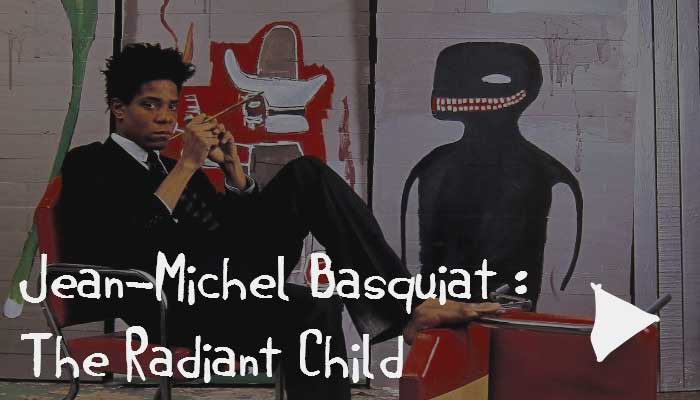

In scelerisque lorem ultricies, tincidunt nisl at, vestibulum ipsum. Sed laoreet orci sit amet posuere ullamcorper. Interdum et malesuada fames ac ante ipsum primis in faucibus. Praesent at consequat nulla. Maecenas quis odio at nulla tempus fringilla nec a purus. Phasellus rutrum ex velit, nec auctor sapien convallis sagittis. Nullam sit amet enim a neque congue dictum. Praesent sed libero at enim rhoncus mattis sit amet in tellus. Aenean ante orci, fringilla non aliquet vitae, elementum.
Maecenas non faucibus purus. Ut dapibus at lectus sagittis tempor. Proin tincidunt dui tempus, posuere ex a, venenatis sem. Vestibulum eu dapibus orci, vel imperdiet purus. Mauris gravida orci vel felis faucibus, tempor consectetur.
Nullam vel ante non quam sodales semper nec a neque. Praesent eget dapibus elit. Nam suscipit ullamcorper lectus. Donec justo neque, ultricies in auctor lacinia, ultrices id velit. Cras non ex eros. Sed ut diam nisi. Vivamus cursus felis vel nunc eleifend, ac aliquet sem ullamcorper. Aenean vestibulum feugiat massa, a condimentum orci. Mauris placerat finibus est a aliquet. Sed ultrices, lacus a lobortis ullamcorper, tellus nunc commodo.
|  |
Trailer of the new documentary Jean-Michel Basquiat: The Radiant Child. Directed by Tamra Davis, the documentary features never-before seen footage of the prolific artist painting, talking about his art, and existing in the two years prior to his death in 1988. The OST features music from Mike D and Ad Rock. Jean-Michel Basquiat: The Radiant Child was released on Feb 21st. -Wikipedia |